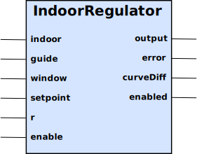

The IndoorRegulator will adjust its output once every 24 hours, by
Output[now] = Output[yesterday] + ( Setpoint - Indoor[yesterday] ) * r

Table 14. Inputs
| Name | Type | Default | Description |
|---|---|---|---|
indoor | Double | 0.0 | The measured indoor temperature. |
guide | Double | 0.0 | The safety guide, which normally comes from an outdoor temperature Curve block. |
window | Double | 0.0 | The percentage (%) deviation that the computed output is allowed to be above or below the guide value. |
setpoint | Double | 0.0 | The setpoint for the indoor temperature. |
r | Double | 0.0 | The room constant. The output is adjusted by r * ( setpoint - measured ) |
enable | Boolean | false | Enables the regulator. If set to false, the guide input will be set to the output. |
Table 15. Outputs
| Name | Type | Description |
|---|---|---|
Output | Double | If enable is false, or if not a complete 24 hour cycle (i.e. up to 48 hours) has been completed, then the output is set to the guide input value. Otherwise the output will be adjusted at 03:00 local time by the error multiplied by the room constant r. The output will never deviate window % away from the guide input value. |
error | Double | The difference between the indoor measurement and the setpoint. A negative value indicates that the indoor temperature is below the setpoint. |
curveDiff | Double | The difference between the guide value and the output. A negative value indicates that the current output is larger than the guide value. |
enabled | Boolean | Enabled is false either when the enable input is false, or if 24 hours sampling of indoor has not completed yet. This sampling will start at the first 03:00 and conclude 24 hours later. So up to 48 hours of delay may occur before the IndoorRegulator block starts its room regulator. |
If the computed output is outside the window of the guide, then a D class and energy category alarm will be sent. The name of the alarm is the name of this block, and the condition describes the error.
The code for this block is unfortunately significantly large to not easily make sense here. It has therefor been modified here to show the intent, but the actual details are somewhat different.
public void update( boolean forceOutput )
{
double guideValue = guide.get();
if( !enable.get() || yesterdayAverage.isNaN() )
{
enabled.set( Boolean.FALSE );
output.set( guideValue );
roomComputedOutput = output.get();
}
else
{
double deviation = guideValue * window().get() / 100;
double minValue = guideValue - deviation;
double maxValue = guideValue + deviation;
if( roomComputedOutput > maxValue )
{
output.set( maxValue );
if( condition == null )
{
condition = roomComputedOutput + " > " + maxValue + " (" + guideValue + "/" + deviation + ")";
AlarmActivationEvent event = new AlarmActivationEvent( name, condition, "D", "energy" );
bus.send( name, event );
}
}
else if( roomComputedOutput < minValue )
{
output.set( minValue );
if( condition == null )
{
condition = roomComputedOutput + " < " + minValue + " (" + guideValue + "/" + deviation + ")";
AlarmActivationEvent event = new AlarmActivationEvent( name, condition, "D", "energy" );
bus.send( name, event );
}
}
else if( roomComputedOutput < maxValue - 1.0 && roomComputedOutput > minValue + 1.0 )
{
if( condition != null )
{
AlarmDeactivationEvent event = new AlarmDeactivationEvent( name, condition, "D", "energy" );
bus.send( name, event );
condition = null;
}
output.set( roomComputedOutput );
}
enabled.set( Boolean.TRUE );
error.set( indoor.get() - setpoint.get() );
curveDiff.set( guideValue - output.get() );
}
}
// This method is called once every 24 hours, after the initial start up period is over.
void updateRegulator()
{
yesterdayAverage = indoorSum / indoorCounter;
indoorSum = 0.0f;
indoorCounter = 0;
nextTime = nextTime.plusHours( 24 );
if( !yesterdayAverage.isNaN() && enable.get() )
{
roomComputedOutput = roomComputedOutput + ( setpoint.get() - yesterdayAverage ) * r.get();
}
update( false );
}